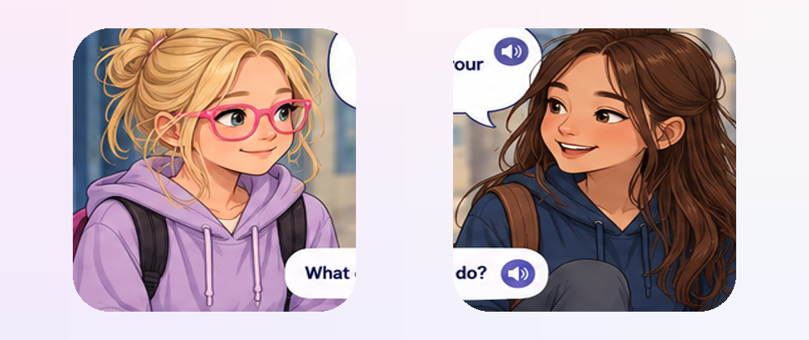

Hi, Indie! 💗
Listen, read, and explore what might happen next. Every choice is a chance to learn. Take your time.

Someone Says Hello
It's Indie's first week at high school. Taylor comes over.
Taylor sounds friendly. Her smile might mean she's happy to meet someone new. You don't have to look at someone's eyes to be friendly.
Choose Indie's reply
Tap 🔊 to hear each answer. Tap the words to choose. There is no score. Different choices can lead to different moments.
Let's hear the conversation
What might Taylor be feeling?
What clues can we notice? People can feel different things, so we cannot always know for sure.
Faces give us clues, but we can't know someone's feelings for certain just by looking.
My turn! 🌟
Try a hello, give a wave, or listen again. You don't have to speak out loud.
Listening settings 🎧
This version still uses your iPad's voice. Natural character voice recordings are not included yet. Natural recorded character voices are a future upgrade. Word highlighting follows speech timing where supported; otherwise it uses an approximate reading pace.
Tap 🔊 to listen.
Indie's Social Adventure · No scores, no timers. Taking a break is okay. You can always try again 💗